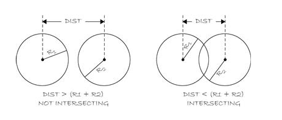

9. More Objects¶
In this section, we’ll continue to explore the concepts of classes and objects using the context of the Ball class.
9.1. this Keyword¶
When referring to properties and methods from within a class definition, the keyword this is used to refer to the actual object itself. We can use the keyword this to clarify some of the code we write when creating a class definition. For example, if we create 2 different class constructors, we can use the keyword with function notation: this(), as a way to call one constructor from within another constructor. For example, the default constructor can call another constructor using this() as a way to simplify the class code like below:
class Ball{
color c;
PVector position;
PVector speed;
float diameter;
//default constructor uses this( ) to call the main constructor
Ball(){
this(color(255,0,0), 100.0, 100.0, 2.0, 2.0, 30.0); //call the other constructor from the default constructor to initialize variables
}
// constructor that accepts input parameters
Ball(color c, float xpos, float ypos, float xspeed, float yspeed, float diameter){
this.position.x=xpos;
this.position.y=ypos;
this.speed.x=xspeed;
this.speed.y=yspeed;
this.diameter=diameter;
}
}
9.2. Comparing Objects isEqual¶
So far, the methods we’ve written have only concerned 1 ball object. How can we write a method to allow comparison between 2 Ball objects? What would it mean for 2 unique Ball objects to be equal. If we try to use the same syntax that we’ve used to compare primitive variable values, we will have problems! With primitive variables, we can directly compare their values. We may need to use type-casting if we try to compare an integer with a float but the syntax would be as follows:
//Compare Primitive types
float float1 = 5.0;
float float2 = 4.999;
int int1 = 5;
boolean equalFloats = (float1 == float2 ); //false
boolean equalNumbers = ( int1 == float1 ); //error
boolean equalTypeCast1 = (int1 == int(float1) ); //true
boolean equalTypeCast2 = (int1 == int(float2) ); //false
// compare PVector objects
PVector vector1 = new PVector( 10, 4 );
PVector vector2 = new PVector( 5, 7 );
boolean equalVectors = ( vector1 == vector2 ); // false
vector1 = vector2; // assignment
boolean equalVectors2 = (vector1 == vector2 ); //true, both variables point to the same memory location,
println( vector1.x ) // 5 since the variable vector1 now refers to the same objects as vector2
So, to continue the discussion in terms of our Ball objects, let’s write a method that will allow us to check whether 2 ball objects occupy the same space on the canvas.
We can look at some of the PVector methods like add(PVector pvec) to have an idea of how one object can interact with another one using methods. We’ll need to use the keyword this in order to write our equals function. Let’s agree that 2 balls are equal if they have the same size and position. Finally, our method must take a Ball as an input parameter and return a boolean as the return value:
boolean isEqual(Ball otherBall){
if(this.position.x == otherBall.position.x && this.position.y == otherBall.position.y && this.diameter = otherBall.diameter){
return true;
}
else
return false;
}
With bouncing balls, it’s unlikely that many ball objects will actually have the exact same values for position and size, so instead let’s look at what collision would look like. Here we want to see if the distance between the centers of the balls is less than the sum of the 2 ball radiuses. The image below shows how distance between circle centers can be compared with circle radius size to determine if 2 circles are intersecting
9.3. Comparing Objects isIntersecting¶
The code below shows how we can implement this in a simple function:
boolean isIntersecting(Ball otherBall){
float distance=dist(this.position.x, this.position.y, otherBall.position.x, otherBall.position.y);
if( (distance <= this.diameter / 2) + (otherBall.diameter / 2)){
return true; //intersecting
}
return false //else, no intersection so return false
}
void highlight(){ //we can call the highlight function in the draw loop to show the intersection
this.c = color(255,255,0,80);
}
Here is the processing sketch.
9.4. Ball Class¶
Here is the full code for the Ball class that includes a test for intersection between 2 balls:
class Ball{
// Variables
color currentColor; //current color of the ball
color ballColor; //store color to reset after highlighting
color highlightColor; //highlight color of the ball
PVector position;
PVector speed;
float diameter;
//Constructor
Ball(){ //default constructor
this(color(255,0,0), width/2, height/2, 3, 5 ); //call the constructor with initialization values
}
// constructor with initialization arguments
Ball(color _c, float _xpos,float _ypos, float _xspeed, float _yspeed){
currentColor=_c;
ballColor=currentColor;
highlightColor=color(255,255,0,40);
position=new PVector(_xpos,_ypos);
speed=new PVector(_xspeed,_yspeed);
}
// class methods
// this method is responsible for creating the displayed ball object
void display(){
fill(currentColor); //this may be highlighted or ballColor
ellipse(position.x,position.y,diameter,diameter);
currentColor=ballColor; //reset ballColor back to original color
}
//this method is responsible for determining movement of the ball
void move(){
position.add(speed);
if(position.x > (width-diameter/2) || position.x < (0+diameter/2)){
speed.x *= -1;
}
if(position.y > (height-diameter/2) || position.y <(0+diameter/2)){
speed.y *=-1;
}
}
//comparison method: do comparison and return true or false
boolean isIntersecting(Ball otherBall){
float distance= PVector.dist(this.position, otherBall.postion); //PVector distance between 2 points
if( distance <= (this.diameter / 2) + (otherBall.diameter / 2)){
return true;
}
return false;
}
void highlight(){
this.currentColor = this.highlightColor; //change the currentColor to be highlighted
}
} //end of Ball class
9.5. Main Program Highlight Intersection¶
Here is the main sketch code:
Ball ball1;
Ball ball2;
void setup(){
size(300,300);
ball1=new Ball(color(100,200,100);,25,20,3,6);
ball1.diameter=50;
ball2=new Ball(color(255,0,0),20,20,2,4);
ball2.diameter=40;
}
void draw(){
background(255);
//test to see ball1 isIntersecting ball2, highlight both if this is true:
boolean isIntersect=ball1.isIntersecting(ball2);
if(isIntersect){
ball1.highlight();
ball2.highlight();
}
ball1.move();
ball1.display();
ball2.move();
ball2.display();
}
9.6. Questions:¶
- Can you create a class called
Blockwhich creates a square shape that moves around the canvas?